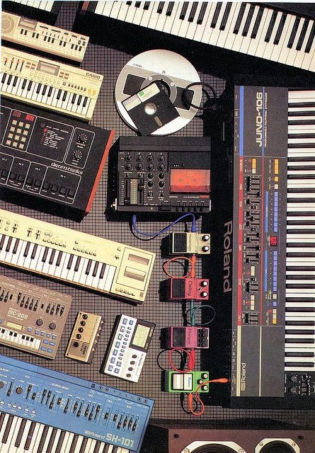

Electronic Dance Music: The Sound of the Future
What is Electronic Dance Music?
Electronic Dance Music (EDM) is a genre defined by its synthetic sounds, pulsating beats,
and ability to move crowds. Created primarily using digital production techniques, EDM spans a vast array of subgenres, from the
euphoric melodies of trance to the heavy drops of dubstep. Rooted in the underground club scenes, EDM has since evolved into a
global phenomenon, dominating festivals, nightclubs, and streaming platforms. Its infectious energy and limitless sonic possibilities
make it one of the most dynamic and influential genres in modern music.
A Brief History of EDM
The origins of EDM can be traced back to the 1970s, when electronic instruments like
synthesizers and drum machines became more accessible. Disco, with its danceable grooves and electronic enhancements, paved the way
for the genre. By the 1980s, house music emerged from Chicago, pioneered by artists like Frankie Knuckles, while Detroit gave birth
to the futuristic sounds of techno through innovators like Juan Atkins and Derrick May.
The 1990s saw an explosion of electronic subgenres, with trance gaining traction in Europe, jungle and drum & bass emerging in the UK,
and rave culture becoming a global movement. The early 2000s brought the mainstream breakthrough of EDM, with artists like Daft Punk,
The Chemical Brothers, and Tiësto leading the charge. By the 2010s, EDM reached new heights, thanks to festival anthems and
chart-topping hits from acts like Avicii, Calvin Harris, and Skrillex. Today, EDM continues to evolve, fusing with pop, hip-hop,
and experimental sounds.
EDM is more accessible than ever, with streaming platforms and social media allowing producers to reach global audiences instantly.
Festivals like Tomorrowland, Ultra Music Festival, and Electric Daisy Carnival attract millions of fans, showcasing both mainstream
and underground talent. Genres like melodic techno, future bass, and deep house continue to gain popularity, expanding EDM’s sonic
landscape.

 Key Elements of EDM
Key Elements of EDM